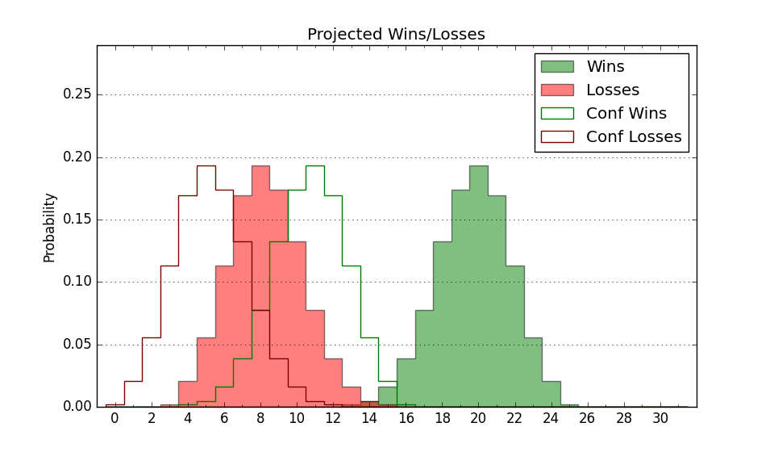

| Home | Game Probabilities | Conferences | Preseason Predictions | Odds Charts | NCAA Tournament |
| City: | Farmville, Virginia | |
| Conference: | Big South (1st)
| |
| Record: | 0-0 (Conf) 9-3 (Overall) | |
| Ratings: | Comp.: 3.2 (130th) Net: 5.5 (114th) Off: 102.2 (199th) Def: 96.7 (61st) SoR: 6.5 (113th) |
| Remaining | ||||||
|---|---|---|---|---|---|---|
| Date | Opponent | Win Prob | Pred. | |||
| 1/3 | @ Winthrop (148) | 40.3% | L 67-70 | |||
| 1/6 | Charleston Southern (347) | 94.7% | W 78-58 | |||
| 1/10 | Radford (163) | 72.9% | W 69-63 | |||
| 1/13 | @ UNC Asheville (178) | 45.9% | L 68-69 | |||
| 1/17 | @ USC Upstate (288) | 69.4% | W 69-63 | |||
| 1/20 | Presbyterian (304) | 90.4% | W 76-61 | |||
| 1/24 | Gardner Webb (211) | 78.3% | W 72-63 | |||
| 1/31 | @ High Point (137) | 36.6% | L 70-74 | |||
| 2/3 | @ Charleston Southern (347) | 83.9% | W 73-62 | |||
| 2/7 | USC Upstate (288) | 88.5% | W 73-59 | |||
| 2/10 | Winthrop (148) | 69.7% | W 71-66 | |||
| 2/17 | @ Presbyterian (304) | 73.4% | W 72-65 | |||
| 2/21 | UNC Asheville (178) | 74.3% | W 72-65 | |||
| 2/24 | @ Radford (163) | 44.1% | L 65-67 | |||
| 2/28 | @ Gardner Webb (211) | 51.4% | W 68-67 | |||
| 3/2 | High Point (137) | 66.3% | W 74-70 | |||
| Previous | Game Score | |||||
| Date | Opponent | Win Prob | Result | Off | Def | Net |
| 11/6 | @St. Bonaventure (65) | 17.2% | L 69-73 | 10.7 | -3.6 | 7.1 |
| 11/15 | @Md Eastern Shore (344) | 83.0% | W 80-61 | 2.7 | 3.2 | 5.9 |
| 11/18 | North Carolina Central (277) | 87.4% | W 73-66 | 5.7 | -14.2 | -8.5 |
| 11/24 | Delaware St. (318) | 91.8% | W 84-82 | -4.7 | -5.2 | -10.0 |
| 11/25 | Lamar (294) | 89.1% | W 83-72 | 3.7 | -8.2 | -4.5 |
| 11/26 | Bethune Cookman (336) | 93.4% | W 69-48 | -14.2 | 16.5 | 2.3 |
| 12/3 | @Morgan St. (351) | 86.1% | W 88-54 | 21.5 | 10.9 | 32.3 |
| 12/9 | @Delaware St. (318) | 76.6% | W 62-61 | -17.7 | 7.9 | -9.9 |
| 12/13 | @Milwaukee (283) | 68.2% | W 80-67 | 12.2 | 6.0 | 18.1 |
| 12/17 | VMI (334) | 93.3% | W 68-49 | -18.6 | 15.9 | -2.6 |
| 12/20 | @North Carolina Central (277) | 67.1% | L 70-79 | -5.7 | -15.7 | -21.4 |
| 12/30 | @Dayton (28) | 9.2% | L 69-78 | 15.6 | -11.8 | 3.8 |
| Stats & Trends | |||||
|---|---|---|---|---|---|
| Current | Day | Week | Month | Season | |
| Composite | 3.2 | +0.0 | +0.8 | +5.9 | +8.8 |
| Comp Rank | 130 | -1 | +9 | +70 | +90 |
| Net Efficiency | 5.5 | +0.0 | +0.6 | +5.1 | -- |
| Net Rank | 114 | -- | +6 | +56 | -- |
| Off Efficiency | 102.2 | +0.1 | +1.6 | +2.2 | -- |
| Off Rank | 199 | +2 | +26 | +19 | -- |
| Def Efficiency | 96.7 | -0.1 | -1.0 | +2.9 | -- |
| Def Rank | 61 | +1 | -12 | +66 | -- |
| SoS Rank | 360 | -1 | +2 | -1 | -- |
| Exp. Wins | 19.7 | +0.0 | +0.3 | +1.9 | +4.4 |
| Exp. Conf Wins | 10.7 | +0.0 | +0.3 | +1.5 | +2.5 |
| Conf Champ Prob | 35.9 | +1.1 | +6.9 | +17.0 | +25.7 |

| Advanced Stats | ||
|---|---|---|
| Stat | Value | Rank |
| Off Eff FG % | 0.467 | 280 |
| Off Ast Ratio | 0.121 | 293 |
| Off ORB% | 0.329 | 48 |
| Off TO Rate | 0.145 | 153 |
| Off FT Ratio | 0.354 | 126 |
| Def Eff FG % | 0.503 | 184 |
| Def Ast Ratio | 0.146 | 222 |
| Def ORB% | 0.227 | 37 |
| Def TO Rate | 0.172 | 51 |
| Def FT Ratio | 0.318 | 169 |